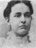
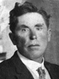
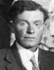
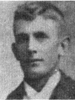

Archibald Waller Overton Buchanan Families
Home
Histories
Charts
Photos
Maps
Restricted
News
Info
Contact
| <--(return)-- |   John Buchanan - Nancy Ann Bach(e) | ----> |  
| Archibald Waller Overton Buchanan - Mary Ann Brown |
| Eunice Rosina Snow Buchanan Married Charles Willard Powell The adopted daughter of Archibald W. O. and Mary Ann Brown |
|
| James Alonzo Buchanan
The 1st child of Archibald W. O. and Mary Ann Brown |
|
| Mary Jane Buchanan Married Isaac Robert Oldroyd The 2nd child of Archibald W. O. and Mary Ann Brown |
|
|  | William Wallace Buchanan Married Nancy Madora Poole The 3rd child of Archibald W. O. and Mary Ann Brown |
| 123 | Eugene Deloss Buchanan Married Harriet Amy Young, Vilate Young and Elizabeth Watson The 4th child of Archibald W. O. and Mary Ann Brown The story of Persis Vilate Young Buchanan Courtesy of Robert Newel Reynolds About Eugene Buchanan swimming the Green River Courtesy of Robert Newel Reynolds |
 | Henry Pomroy Buchanan Married Ida Brugger The 5th child of Archibald W. O. and Mary Ann Brown |
|  | Amy Lorette Buchanan Married Alma Ence The 6th child of Archibald W. O. and Mary Ann Brown |
| Charles V Buchanan
The 7th child of Archibald W. O. and Mary Ann Brown |
{kind=link}
Back to Buchanan Family History web pages.